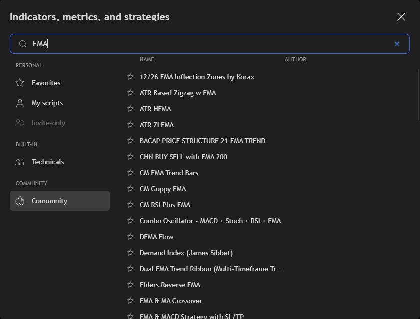
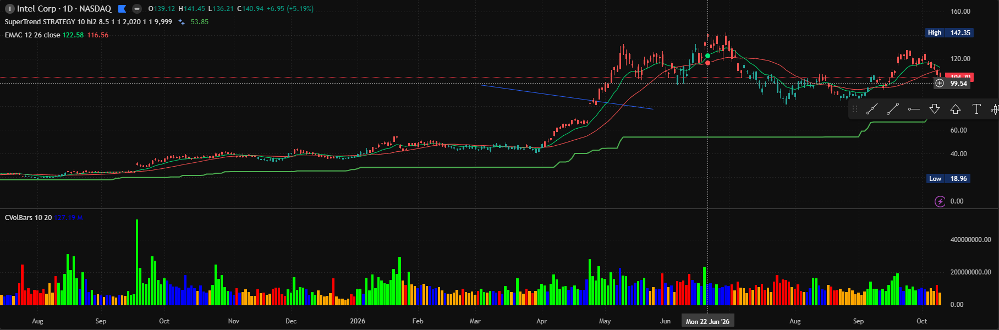

More than 1,800 technical indicators, free.
From the usual moving averages, RSI and MACD to a large community collection and candlestick patterns. Add as many as you want to a chart: there is no limit.

Every indicator you need, in one search
Press / on the chart, type a name and add the indicator. Star the ones you use and they stay at the top.
The standard set
117 indicators: moving averages, volatility, channels and bands, momentum, oscillators, trend and volume. RSI, MACD, Bollinger Bands, Stochastic, ATR, VWAP, Ichimoku, Supertrend and the rest.
The community collection
More than 1,700 indicators published by the community, searchable by name like the standard ones.
Candlestick patterns
45 patterns, from doji and hammer to engulfing and morning star, marked on the chart.
Volume and market profiles
Volume profiles and TPO profiles next to the price.
Indicator on indicator
Use another indicator's line as the source, for example a moving average of the RSI.
Settings and templates
Change inputs, style and the intervals an indicator shows on. Save a set of indicators as a template and apply it to any chart.
Alerts on indicators
Get an alert when an indicator crosses a value or another line, or when one of its alert conditions fires.
Read the source
Open the source of a built-in indicator, copy it into the editor and make it your own.
On the chart
Indicators draw on the price or in their own pane, with their values in the legend. Drag a pane to resize it, or move an indicator to another pane.

Questions
Are the indicators free?
Yes, all of them, with no limit on the number per chart.
Can I write my own indicator?
Yes, in the built-in OakScript editor. See scripting.
Can I use these indicators in my own app?
Yes. They come from the open-source lightweight-charts-indicators library, on npm.
Can I screen stocks with an indicator?
Yes. The script screener runs any indicator over an index or a watchlist.
Everything else in the app
Try it. It takes a minute.
Free for Windows, macOS and Linux. Or open the demo in your browser.